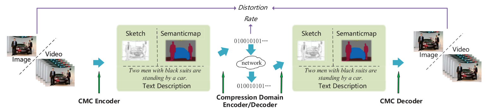
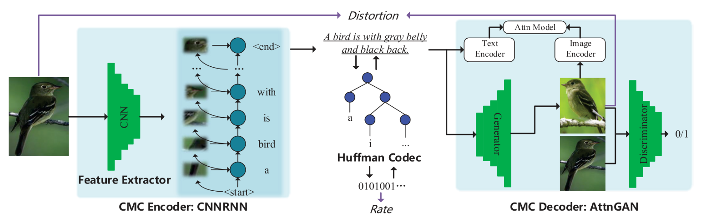
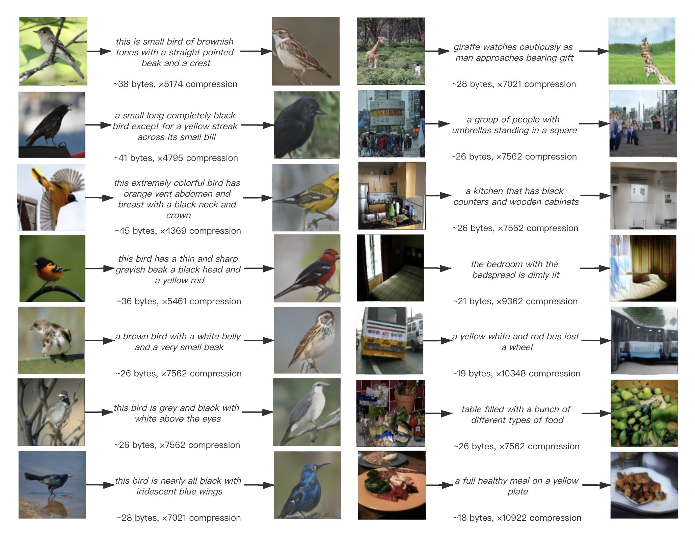
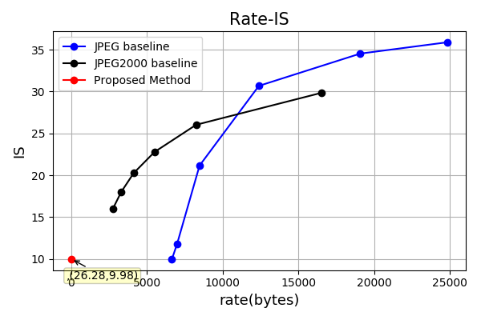
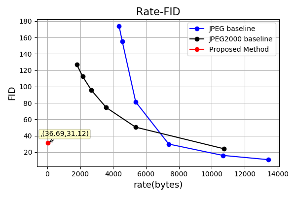
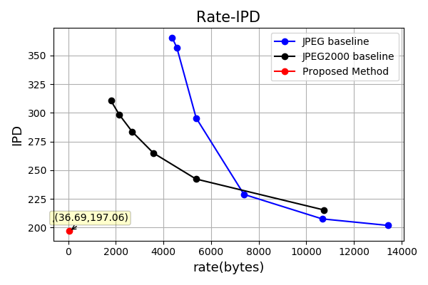
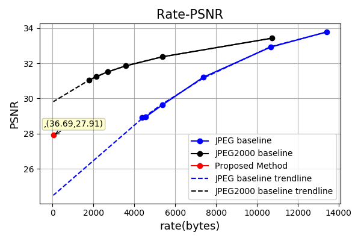
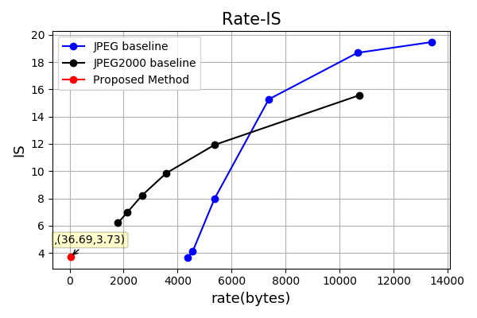

Cross Modal Compression: Towards Human-comprehensive Semantic Compression
| Jiguo Li | Chuanmin Jia✝ | Xinfeng Zhang | Siwei Ma | Wen Gao |
|
|
ICT,CAS | ✝PKU | UCAS |
Abstract
Traditional image/video compression aims to reduce the transmission/storage cost with signal fidelity as high as possible. However, with the increasing demand for machine analysis and semantic monitoring in recent years, semantic fidelity rather than signal fidelity is becoming another emerging concern in image/video compression.
With the recent advances in cross modal translation and generation, in this paper, we propose the cross modal compression (CMC), a semantic compression framework for visual data, to transform the high redundant visual data (such as image, video, etc.) into a compact, human-comprehensible domain (such as text, sketch, semantic map, attributions, etc.), while preserving the semantic.
Specifically, we first formulate the CMC problem as a rate-distortion optimization problem. Secondly, we investigate the relationship with the traditional image/video compression and the recent feature compression frameworks, showing the difference between our CMC and these prior frameworks. Then we propose a novel paradigm for CMC to demonstrate its effectiveness. The qualitative and quantitative results show that our proposed CMC can achieve encouraging reconstructed results with an ultrahigh compression ratio, showing better compression performance than the widely used JPEG baseline.
Framework
|  |
|
Illustration of our proposed Cross Modal Compression~(CMC) framework. The compressed representation in the compression domain is a compact, common, and human-comprehensible feature~(such as text, sketch, semantic map, attributions. etc.) which can be losslessly encoded into a bitstream. The whole framework consists of four parts: CMC encoder, CMC decoder, entropy encoder, and entropy decoder.
|
| Methods | Compression Ratio | Multi-task Analysis | Human-comprehensive | Frontend Load | Backend Load | Data Reconstruction |
|---|---|---|---|---|---|---|
| Traditional Compression | Middle | ✔ | × | Middle | High | ✔ |
| Ultimate Feature Compression | High | × | × | High | Low | - |
| Intermediate Feature Compression | High | ✔ | × | Middle | Middle | - |
| Croaa Modal Compression | High | ✔ | ✔ | Middle | Middle | ✔ |
A Paradigm of Cross Modal Compression: Image-Text-Image for cross modal image compression
|  |
|
Illustration for a paradigm of CMC: Image-Text-Image~(ITI)
|
Qualitative results on CUB 200 and MS COCO
|  |
|
Qualitative results of our ITI framework on CUB-200-2011(left) and MS COCO(right). For each sample, we show the raw image, the text representation, and the reconstructed image, subsequently. We also show the bitrate and the compression ratio under each text.
|
Comparison results with JPEG and JPEG2000
|  |  |  |  |
| (h) Rate-IS ↑ on MS COCO | (h) Rate-FID ↓ on MS COCO | (h) Rate-IPD ↓ on MS COCO | (h) Rate-PSNR ↑ on MS COCO |
|  | |||
| (h) Rate-IS ↑ on CUB 200 | (h) Rate-FID ↓ on CUB 200 | (h) Rate-IPD ↓ on CUB 200 | (h) Rate-PSNR ↑ on CUB 200 |
Codes for This Paper
The codes can be found on github.